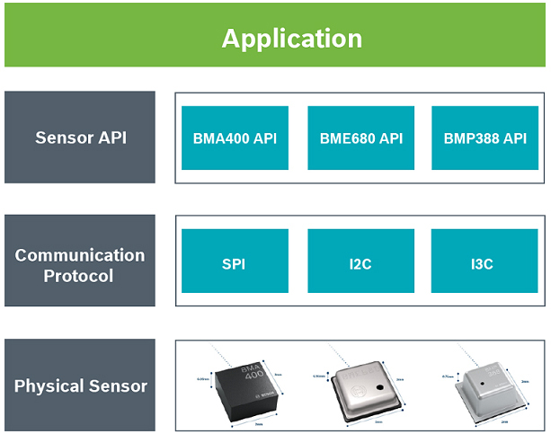
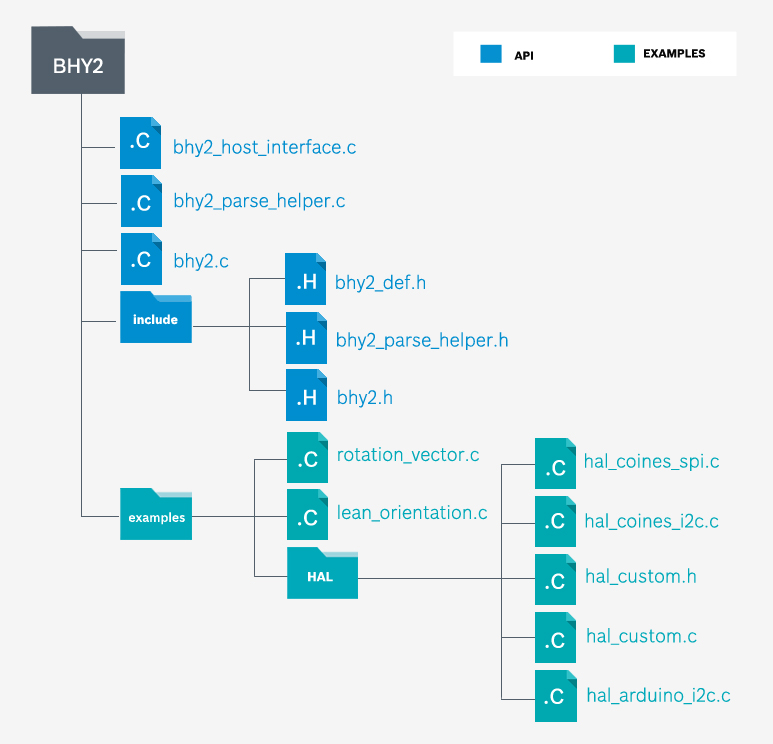

The Bosch Sensor APIs provide a user friendly interface to access sensors. Some of the Sensor API operations are:
The diagram below shows the interface between the Application and Sensor API.
A general folder structure in which files are layered according to complexity is as shown below:
Note: "hal" is hardware abstraction layer that varies based on the board ( eg, COINES ) and the type of communication protocol ( eg, SPI/I2C).
A basic usage of sensor APIs for BMA is as seen below. For more information, please refer to the respective API documentation ( eg, BMA400->examples->accelerometer.c )
The same template is avaliable in repsective API's example folder ( eg., BMA400->examples->hal->bma400_hal_custom.c )
COmmunication with INertial and Environmental Sensors (COINES) is a low-level
interface to the Bosch Sensortec's Application Board APP2.0. COINES is used with the SensorAPI of the required
sensor to access the application. The user can access Bosch Sensortec's MEMS sensors through a C interface to
modify, compile, and run sample applications.
With sample codes and the Bosch Sensortec's Application Board APP2.0, the user can see how to use the SensorAPI in an embedded environment by running sample codes. They can also create their own applications easily based on the sample codes for testing and debugging.
Note: Source code of sample applications and SensorAPI are provided with the COINES library as a package.
All example codes provided in https://api.bosch-sensortec.com website & the Bosch Sensor API source code is avalible in the GitHub repo. The license for this is as shown below.
Copyright (C) 2019 Bosch Sensortec GmbH Redistribution and use in source and binary forms, with or without modification, are permitted provided that the following conditions are met: Redistributions of source code must retain the above copyright notice, this list of conditions and the following disclaimer. Redistributions in binary form must reproduce the above copyright notice, this list of conditions and the following disclaimer in the documentation and/or other materials provided with the distribution. Neither the name of the copyright holder nor the names of the contributors may be used to endorse or promote products derived from this software without specific prior written permission. THIS SOFTWARE IS PROVIDED BY THE COPYRIGHT HOLDERS AND CONTRIBUTORS "AS IS" AND ANY EXPRESS OR IMPLIED WARRANTIES, INCLUDING, BUT NOT LIMITED TO, THE IMPLIED WARRANTIES OF MERCHANTABILITY AND FITNESS FOR A PARTICULAR PURPOSE ARE DISCLAIMED. IN NO EVENT SHALL COPYRIGHT HOLDER OR CONTRIBUTORS BE LIABLE FOR ANY DIRECT, INDIRECT, INCIDENTAL, SPECIAL, EXEMPLARY, OR CONSEQUENTIAL DAMAGES(INCLUDING, BUT NOT LIMITED TO, PROCUREMENT OF SUBSTITUTE GOODS OR SERVICES; LOSS OF USE, DATA, OR PROFITS; OR BUSINESS INTERRUPTION) HOWEVER CAUSED AND ON ANY THEORY OF LIABILITY, WHETHER IN CONTRACT, STRICT LIABILITY, OR TORT (INCLUDING NEGLIGENCE OR OTHERWISE) ARISING IN ANY WAY OUT OF THE USE OF THIS SOFTWARE, EVEN IF ADVISED OF THE POSSIBILITY OF SUCH DAMAGE The information provided is believed to be accurate and reliable. The copyright holder assumes no responsibility for the consequences of use of such information nor for any infringement of patents or other rights of third parties which may result from its use. No license is granted by implication or otherwise under any patent or patent rights of the copyright holder.